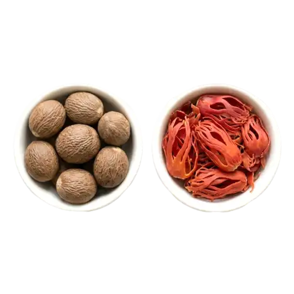

We are certified Ceylon Nutmeg & Mace suppliers from Sri Lanka, exporting premium nutmeg seeds and mace blades with rich aroma to the EU, USA, and 40+ countries worldwide — serving culinary, wellness, and fragrance industries.
Harvested from the Myristica fragrans tree, both Nutmeg and Mace come from the same fruit – the seed and its lacy outer covering. Sri Lanka's unique terroir ensures high oil content and a deeply aromatic profile in both spices, suitable for gourmet cooking, teas, cosmetics, and wellness products.
Sri Lanka – Wet Zone Plantations
Whole Nutmeg · Mace Blades · Powdered
Sweet, Warm, Slightly Woody
Baking · Beverages · Ayurveda · Fragrance

Compared to nutmeg from Indonesia or India, Ceylon Nutmeg contains a higher proportion of essential oil (7–14%) and a distinctly mellow heat for superior aroma and flavor.
The mace blades are thin, vibrant, and highly fragrant—perfect for premium spice mixes and perfumery. Their delicate flavor profile makes them ideal for gourmet applications.
Our products are grown without chemicals, hand-harvested, and carefully dried. The result is clean flavor, strong aroma, and bold visual appeal for discerning buyers.
Ideal for bulk buyers and high-end spice companies seeking premium Sri Lankan nutmeg and mace with consistent quality and reliable supply.
Adds warmth to baked goods, beverages, and savory recipes. Popular in holiday spice blends.
Used in perfumes, balms, and ointments for its relaxing scent and anti-inflammatory properties.
Traditionally used to aid digestion, calm nerves, and support hormonal balance.
Our nutmeg and mace are responsibly grown and processed to retain all the natural benefits while maintaining purity.
Organic
Vegan
Gluten-Free
Non-GMO
| Botanical Name | Myristica fragrans |
| Forms | Whole Nutmeg · Powder · Mace Blades |
| Moisture | < 11% |
| Volatile Oil | 7 – 14% |
| Color | Reddish-Orange (Mace) · Brown (Nutmeg) |
| Packaging | 100g · 500g · 1kg · Bulk Options |
| Shelf Life | 24 Months |
Ready to spice up your blend with bold Sri Lankan flavor?